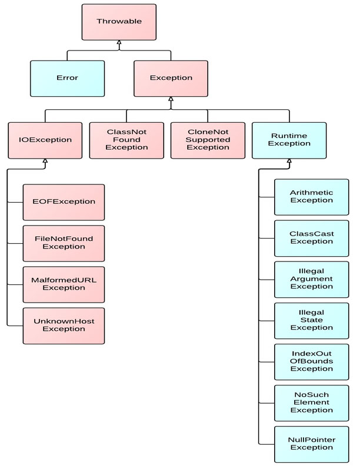
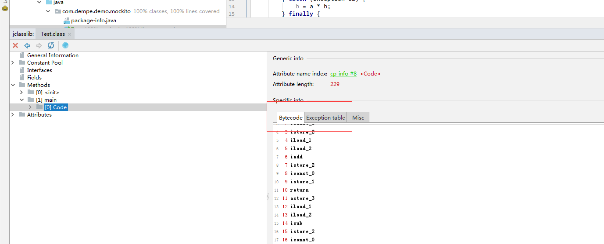
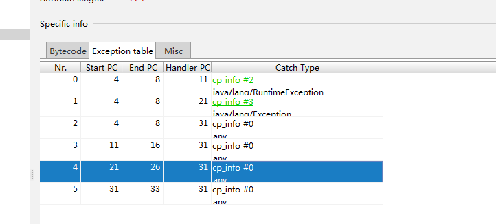

JVM异常体系
异常的继承结构：Throwable为基类，Error和Exception继承Throwable，RuntimeException和IOException等继承Exception。Error和RuntimeException及其子类成为未检查异常（unchecked），其它异常成为已检查异常（checked）。

jvm异常原理
JVM try catch原理你理解吗？ –据说是阿里巴巴的一道面试题
反编译一段小程序
1 | public static void main(String[] args) { |
通过命令javap -c Main 反编译.class文件得到一下输出：
1
2
3
4
5
6
7
8
9
10
11
12
13
14
15
16
17
18
19
20
21
22
23
24
25
26
27
28
29
30
31
32
33
34
35
36
37
38
39
40
41 0: iconst_1
1: istore_1 // 给局部变量表1号slot赋值为1，代表a
2: iconst_3
3: istore_2 // 给局部变量表2号slot赋值为3，代表b
4: iload_1 // try块开始！
5: iload_2
6: iadd
7: istore_2 // 指令4-7 完成了操作：b = a + b
8: iconst_0 // finally块开始！
9: istore_1 // 指令8-9 完成操作a=0
10: return // 函数执行完毕，返回
11: astore_3 // RuntimeException e1异常处理块开始！
12: iload_1
13: iload_2
14: isub
15: istore_2
16: iconst_0 // finally处理块
17: istore_1
18: goto 38 // RuntimeException e1异常处理块结束！
21: astore_3 // Exception e2异常处理块开始！
22: iload_1
23: iload_2
24: imul
25: istore_2
26: iconst_0 // finally处理块
27: istore_1
28: goto 38 // Exception e2 异常处理块结束！
31: astore 4 // 其他任何异常处理块
33: iconst_0
34: istore_1
35: aload 4
37: athrow // 往将异常外抛
38: return
Exception table: // 异常表
from to target type
4 8 11 Class java/lang/RuntimeException //4-8 号指令中，碰到 NullPointerException时，跳到 11 号指令
4 8 21 Class java/lang/Exception
4 8 31 any
11 16 31 any
21 26 31 any
31 33 31 any
异常表
异常表的每个入口信息包括：
- 1起点
- 2终点
- 3将要跳转到的字节码序列的pc指针偏移量
- 4被捕获异常类的常量池索引
异常表实际上记录了try catch的关键逻辑。 try的起点，和try的终点，以及catch的起点（及时将要跳转的位置）
另外，我们从反编译的字节码可以看到，异常表与字节码序列一起存到class 文件中。
jvm的异常处理的逻辑：
- 1.如果发生异常，jvm在表中查找异常，如果找到异常，就跳转到实现catch字句的字节码序列。
- 2.如果没有发现相匹配的项，jvm将当前栈帧从栈中弹出，再次抛出同样的异常。
- 3.当jvm弹出当前栈帧时，jvm马上终止当前方法的执行，并且返回到调用本方法
- 但是并非继续正常执行该方法，而是在该方法中抛出同样的异常，使得jvm在该方法中再次执行同样的搜索异常表的操作。
异常的开销
首先异常是有开销的，也就是使用异常是有成本的。这点基本上是共识。 现在的问题是异常的开销究竟有多大? 要搞清楚这个问题，就要弄明白异常的消耗主要来自哪里？
1、当代码出现异常的时候，首先需要创建一个异常 2、创建一个异常时，需要收集一个栈用来跟踪异常情况 3、栈跟踪异常情况需要记录下来（入栈，出栈），一直跟踪到我们扑捉到异常并且进行处理后截止
根本原因在于: 异常基类Throwable.java的public synchronized native Throwable fillInStackTrace()方法 方法介绍: Fills in the execution stack trace. This method records within this Throwable object information about the current state of the stack frames for the current thread. 性能开销在于: 1. 是一个
synchronized方法(主因) 2. 需要填充线程运行堆栈信息
异常控制流程的一些争论
关于要不要以来异常机制来处理控制流程，一直以来就有这个争论。不少帖子都讨论过这个问题。 在两本不同的书里面也见到了截然不同的观点：
- effect Java不建议用异常来控制业务流程，理由是异常消耗比较大。
- 代码简洁之道则是相反，建议用异常来处理业务控制流程，减少不必要的return
这个是一个取舍问题，关键点在你想要什么，如果对性能没有极致追求，其实用异常来控制业务流程也不错，清晰直观。
补充
try catch finally return执行顺序
这里有一个常见的面试题，就是return 和finally的执行顺序问题， 从java语言的角度理解很诡异，但是从指令就比较容易理解。 结论：finally的代码执行是在最后一条return指令之前。
idea 字节码工具插件jclasslib
在了解异常原理的过程中发现了一个很不错的查看修改字节码的 idea插件 jclasslib 。
https://github.com/ingokegel/jclasslib
用它来查看字节码是这样的。

